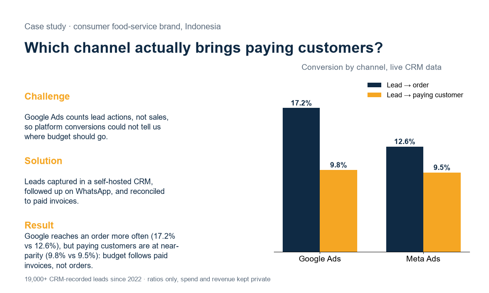
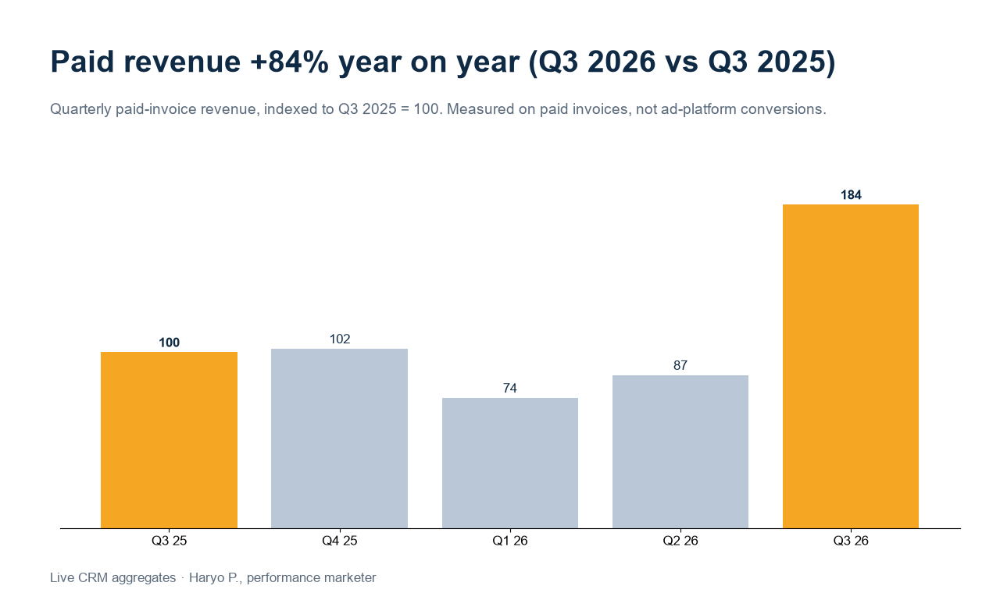
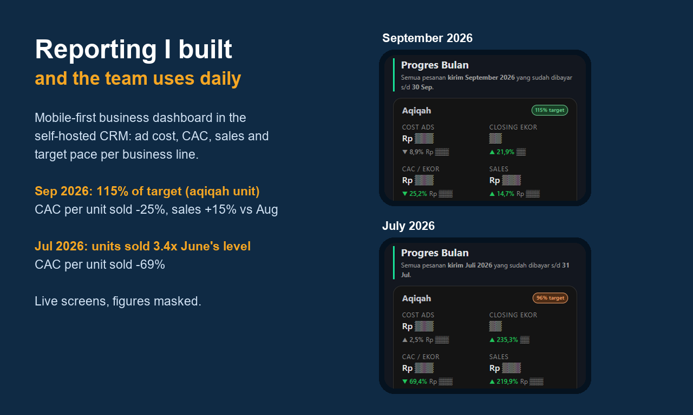

Measured on paid invoices, not platform conversions
Challenge
Google Ads counts lead actions, not sales. A form fill or a WhatsApp click looks the same to the platform whether it becomes an order or not, so platform conversions could not tell us where the next rupiah of budget should go.
Solution
Leads are captured in a self-hosted CRM I built, with source and campaign, and click IDs where the ad click carries them. Sales follows up on WhatsApp from the same system, and orders and invoices link back to the lead. Budget is judged on paid invoices reconciled to the CRM, not on what the ad platform reports.
Result
On the same CRM records, Google leads convert to order at 17.2% against 12.6% for Meta, but to a paying customer at almost the same rate, 9.8% against 9.5%. Order rate alone overstates Google's edge, so budget is set on paid customers, not orders.

Measured the same way, quarterly paid-invoice revenue in Q3 2026 was 84% higher than in Q3 2025. It is one quarter; the first half of 2026 ran below the Q3 2025 level.

The reporting the team uses daily
The same CRM drives a mobile-first business dashboard: ad cost, CAC, sales and target pace per business unit and per channel, all computed from paid invoices. It is built for phones because that is where the team reads it. In September 2026 the aqiqah unit (whole-goat catering packages, counted per animal) closed at 115% of its monthly target, with CAC per animal sold down 25% and sales up 15% on August. In July, animals sold reached 3.4x June's level while CAC per animal sold fell 69%.
